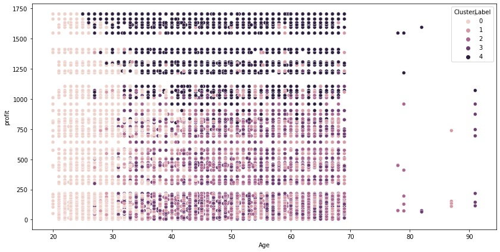
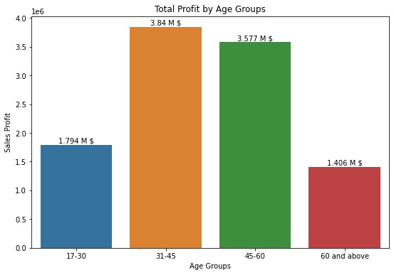
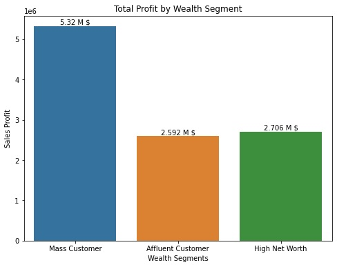
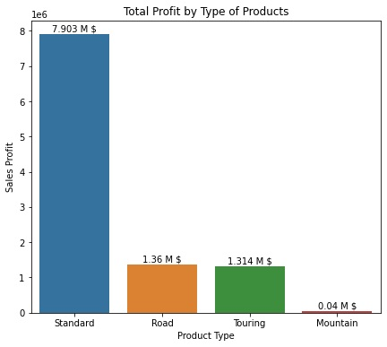
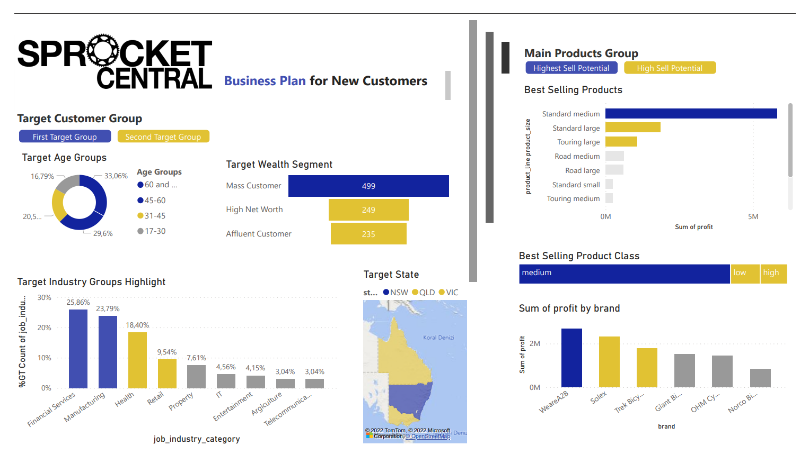

Data set clustering visualized.
The project aims to enhance the Bicycle Company's marketing strategy by leveraging data-driven insights from customer trends and behaviors. Using advanced analytics on the client's existing datasets, the focus is to identify and recommend the most valuable 1000 new customers to target, with the intent of maximizing value for the organization.
I have proposed a systematic and analytic approach, encapsulating a progressive timeline, segmented into three distinct phases:
Datasets Utilized:
Analytical Approach:
This foundational phase involves a rigorous data quality assessment, including the management of missing data through robust imputation techniques. The exploratory data analysis (EDA) will utilize statistical and visual tools to uncover underlying patterns, detect anomalies, and test hypotheses within the customer demographics, transactional data, and addresses.



A K-Means clustering algorithm is implemented to achieve precise customer segmentation. This is formulated on critical customer attributes such as past purchases, age, tenure, property valuation, and profit contribution, with the aim to discern distinct customer clusters.
The final interpretative phase will deeply analyze each customer cluster. Special attention is accorded to the most profitable segments to tailor strategic marketing initiatives. This comprehensive analysis is translated into actionable recommendations for customer acquisition, aimed at optimizing the client's marketing resources for the highest return on investment.

Key Findings:
Strategic Recommendations:
Segmentation Insights:
| ClusterLabel | Past 3 Years Bike Related Purchases | Age | Tenure | Property Valuation | Profit Sum | Profit Mean | Owns Car | Affluent Customer | High Net Worth | Mass Customer |
|---|---|---|---|---|---|---|---|---|---|---|
| Cluster 0 | 50.3 | 28.8 | 3.8 | 7.7 | $2,095,120.50 | $493.20 | 0.5 | 0.3 | 0.2 | 0.5 |
| Cluster 1 | 46.5 | 49.1 | 12.6 | 3 | $1,281,487.90 | $432.80 | 0.4 | 0.2 | 0.3 | 0.5 |
| Cluster 2 | 24.3 | 50.2 | 13.1 | 8.8 | $1,557,879.00 | $324.20 | 0.5 | 0.2 | 0.2 | 0.5 |
| Cluster 3 | 77.5 | 49.7 | 12.4 | 8.8 | $1,471,544.70 | $353.10 | 0.5 | 0.2 | 0.3 | 0.5 |
| Cluster 4 | 48.3 | 48 | 12.1 | 7.9 | $4,211,035.60 | $1,374.80 | 0.5 | 0.2 | 0.3 | 0.5 |
Conclusion:
The integration of customer data analytics and machine learning has culminated in actionable insights for the company, enabling data-driven decision-making for marketing resource allocation and customer engagement strategies. This project underscores the potential of predictive modeling and customer segmentation in optimizing marketing efforts and maximizing revenue.